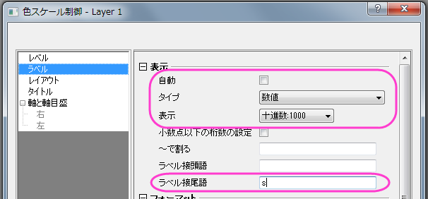

他の列からのカラーマップを使用したサイズ付き散布図
サマリー
このチュートリアルでは、シンボルに色とサイズをつけるために他の列を利用する散布図の作図方法を学習します。
このグラフは複数の列を基にした散布図に、他のデータ列から生成した色とサイズの違いを表示させます。このグラフには、ユーザ定義のカラーマップが適用されます。
必要なOriginのバージョン: 2016 SR0以降
学習する項目
このチュートリアルでは、以下の項目について解説します。
- ワークブック列の値を使用してシンボルのサイズと色をコントロールする
- ユーザ定義のカラーマップを設定する
- 作図のグリッド線を編集する
他の列からのカラーマップを使用したサイズ付き散布図を作図する手順
このチュートリアルは、チュートリアルデータプロジェクト<Origin EXE フォルダ>\Samples\TutorialData.opjと関連しています。
- チュートリアルデータプロジェクトを開き、プロジェクトエクスプローラでSymbol Plot
with Size and Color Mappingフォルダを開きます。
- ワークブック内の最初のワークシートにある列Aと列Bを選択し、作図：基本の2Dグラフ：散布図と選択して散布図を作図します。
- グラフがアクティブな状態でグラフ操作：レイヤ内容と選択します。レイヤ内容というダイアログが開きます。左側パネルでY,
Y1, Y2という ロングネームの列を全て選択して右側パネルに追加します。非グループ化ボタンをクリックしてグループ化を解きます。OKをクリックして、ダイアログを閉じます。列のロングネームの順番はそのままグラフの凡例に適用されます。グラフ操作：レイヤ内容ともう一度操作してダイアログを開き、右側パネル上部の上下矢印で順番を以下の図と同じになるように設定してください。繰り返しあるデータは
 ボタンでリストから外します。
ボタンでリストから外します。
- 散布図をダブルクリックして作図の詳細ダイアログを開きます。シンボルタブを開き、ひとつずつのプロットに対して以下の画像のように設定を行います。それぞれのプロットの設定が終わる度に適用ボタンを押してください。
- 次の7つのステップはそれぞれのデータプロットのシンボル設定を表します。データプロット1の設定は以下の通りです。
- データプロット2の設定は以下の通りです。
- データプロット3の設定は以下の通りです。
- データプロット4の設定は以下の通りです。
データプロット4にはラベルを追加します。
- データプロット5の設定は以下の通りです。
データプロット5にはラベルを追加します。
- データプロット6と7のシンボル設定は凡例となります。
- そして OK ボタンをクリックして、ダイアログを閉じます。X軸をダブルクリックして軸ダイアログを開きます。水平と垂直の両方のアイコンで、開始に-50、終了に50の値を入力します。主目盛と副目盛の設定もそろえます。
続けてOKをクリックして適用します。グラフは次のようになります： このようなグラフになります。

カラーマップと凡例を設定する手順
- post-Electrical Openとpre-Electrical Openの境界の色はどちらもMap:Col(C)を使用しました。作図の詳細を開き、スタイルの設定について、カラーマップタブで詳しく設定します。レベルヘッダをクリックし、レベルの設定ダイアログを開きます、レベルの開始を0、終了を155に設定し、主レベルを5に設定します。
- それぞれのレベルをダブルクリックして値を編集します。不要なレベルは削除してください。同じように色塗りもひとつずつ編集します。
この色の設定を適用をクリックしてpost-Electrical Open散布図に適用します。
- この設定をテーマ、mycolor.othとして保存します。 このテーマは次にpost-Electrical Open 散布図に適用されます。
テーマをpre-Electrical Open散布図に適用します。
OK をクリックして、ウィンドウを閉じます。
- メインメニューでグラフ操作：凡例：データプロットと操作して凡例をグラフに表示します。凡例を右クリックしてプロパティを選択し、オブジェクトプロパティダイアログの内容を下図のように変更してOKをクリックします。
- メインメニューで挿入：新規の色スケールと操作して色スケールをグラフに表示します。
グラフの編集
- メインメニューでフォーマット：作図の詳細（レイヤ属性）と操作して作図の詳細ダイアログを開きます。レイヤの大きさタブを開き、レイヤ領域を次の図のように設定します。
- 作図の詳細ダイアログでレイヤ表示方法タブを開き、余白による切り取り(%)を-2%に設定してOKをクリックし、ダイアログを閉じます。
- 先ほど作成した凡例をコピーし、グラフに貼り付けてもうひとつ凡例を準備します。凡例の内容は以下のようにします。
OKをクリックしてダイアログを閉じます。
- 色スケールをダブルクリックして色スケール制御ダイアログを開きます。レベルを選択して両端のレベルを非表示にするを選択します。次にラベルを選択し、表示ノードを次のように設定します。

タイトルタブでカラースケールにElapsed Timeというタイトルを追加し、OKをクリックして適用します。
- 軸をダブルクリックして、軸ダイアログを開きます。グリッド線タブを開き、垂直と水平、両方について、以下のように設定します。
OKをクリックして設定を適用し、ダイアログを閉じます。
- 最後に、プロット操作・オブジェクト制御ツールバーのテキストツール
 を使い、「symbol size
is relative to event energy」と追加します。
を使い、「symbol size
is relative to event energy」と追加します。